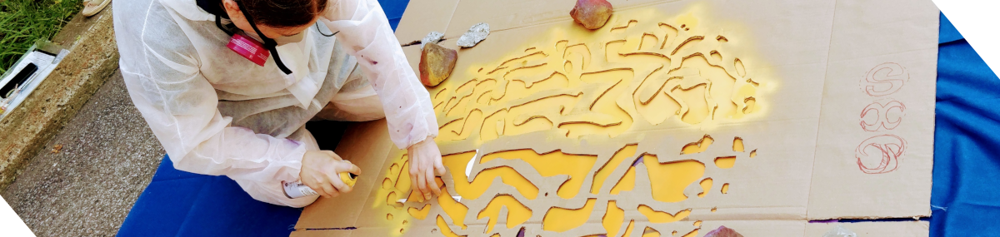
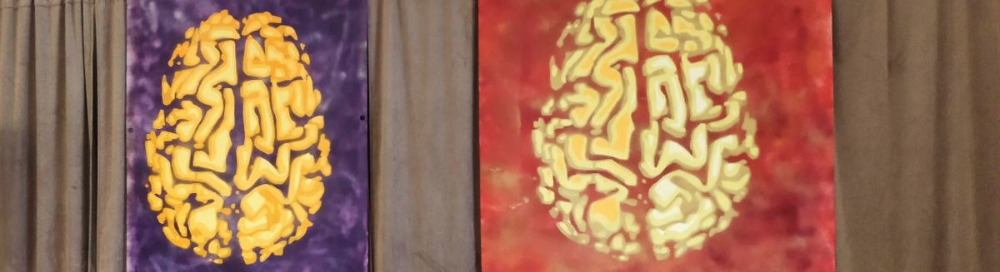

Manifesto#
Academia means different things to different people. The laboratory for brain simulation and exploration (SIMEXP) is founded on a fairly opinionated, and possibly unusual view of what academia is. This document tries to make the SIMEXP academic values explicit. It does not mean that everybody at SIMEXP shares all of these values, or operates under a particular value at all times. These values are rather guiding principles for many key aspects of the operations of the lab, and form a baseline for expectations.

The hacker way#
Sharing is a key aspect of all academic communities, but how that sharing works varies widely. Lots of academic collaborations are transactional in nature, with people exchanging one contribution for another. Original founders of free software and the hacker movement operate under very different, simple rules. If you want to learn about something, just ask and you can expect an answer. The day somebody wants to learn something from you, you are expected to help that person. Don’t try to balance out what you get and give to a particular person. By helping others, you’re just building up karma, doing good to your community and the world. A corollary of that collaborative ethos is to strive to openly share as much research material as possible, data, code and ideas. The sharing process is greatly facilitated by adopting tools designed for sharing in your daily research activities (“open by design”).
The brainhack way#
Some laboratories operate under pretty strict labor division, with technical assistants helping researchers implement specific methods. SIMEXP works in data science, and our methods are computational. On one hand, relying on other people to implement computations dramatically limits both your ability to iterate quickly, and your understanding of the methods. On another hand, blind applications of algorithms to neural data without deep understanding of the neuroscience questions is not productive and is, in our typical use cases, a complete waste of time. A core SIMEXP belief is that lab members need to develop both strong computational and neuroscience skills, on top of their own area of expertise. This can be arduous at times, but is key for the type of research we do. It is also a huge asset for employability both inside and outside of academia.
Automate all the things#
Neural data science requires us to iterate analyses a lot, to explore new ideas, replicate analyses on new datasets, and test the impact of various hyper-parameters. This means that data analysis operations should be automated to the greatest extent possible.

The academic game is not the endgame#
Academia is a highly competitive environment. Some individuals end up focussing their work based on the metrics used to assess them, out of fear of not surviving the game, or simply thinking that it is what the academic community expects them to do. This means that many labs expend considerable energy towards publishing in high impact-factor journals, apply to awards, attend as many conferences as possible, get invited presentations, and sit on many committees, amongst others. The SIMEXP lab does of course support the careers of lab members, whether academic or not, and makes strategic investment of resources towards these metrics. But it is critical to not lose sight that pretty much none of us went into academia to work towards these metrics. The endgame of SIMEXP is to solve problems, namely prognosis of Alzheimer’s disease, and building human-like artificial neural networks. The academic game is a means to these ends. Nothing more. We aim to keep our collective and individual academic boats afloat with bare minimum required efforts, and are committed to not let the academic game ruin the fun and joy we have doing research. We rightfully trust that doing elite research, prioritizing quality over quantity, is all it really takes to strive inside and outside of academia anyway.
Well-being#
Finally, there are workplaces that encourage, or even push people to work themselves into the ground. It will happen from time to time to work hard, for a deadline or for the flow. But nothing great happens with chronically overworked people, especially in a creative business. Make sure you take care of yourself. If you feel down or tired, please take as many days off as necessary. Take holidays, it’s great. It is OK to focus on your personal life at times. It is also OK to pass on opportunities, you can’t do it all. Others will come. If you feel overwhelmed, find support. If you see someone being overwhelmed, be patient and supportive. Friends, peers or professionals, there are many ways to find balance. Try to find the mix that works for you, and be proactive at building this support network. You can also join us for Yoga!